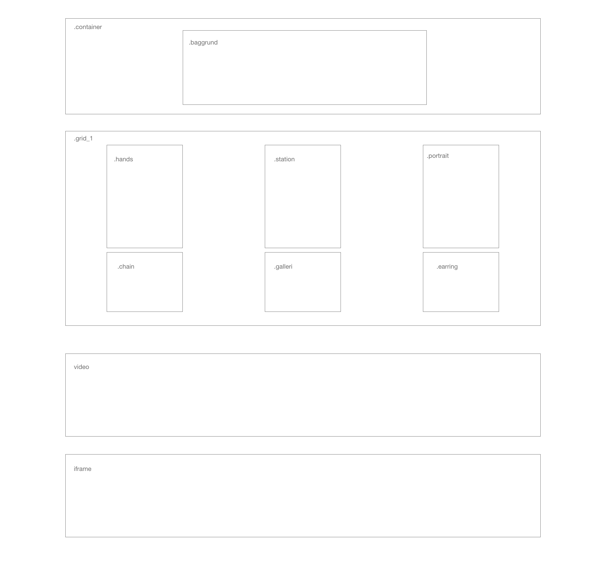
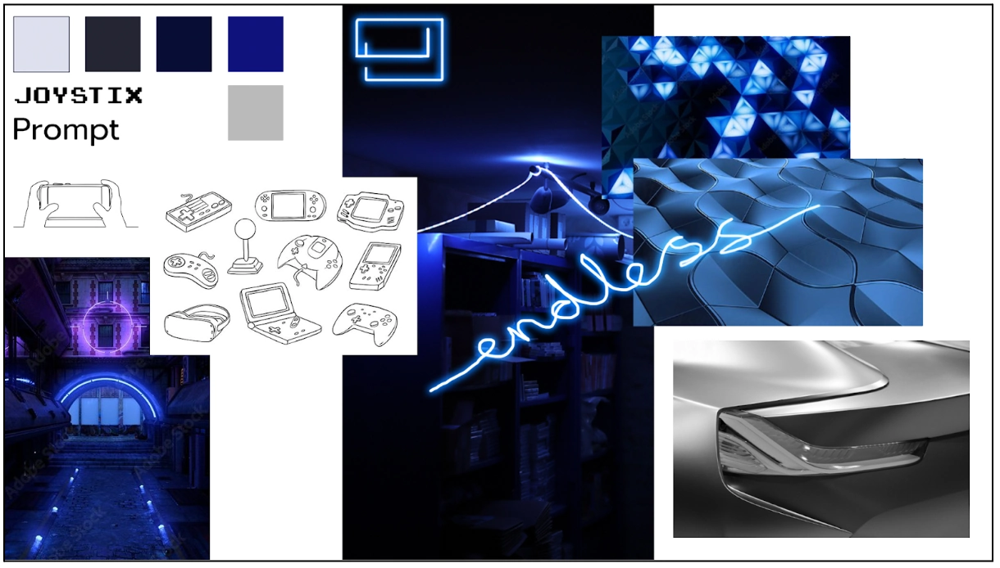
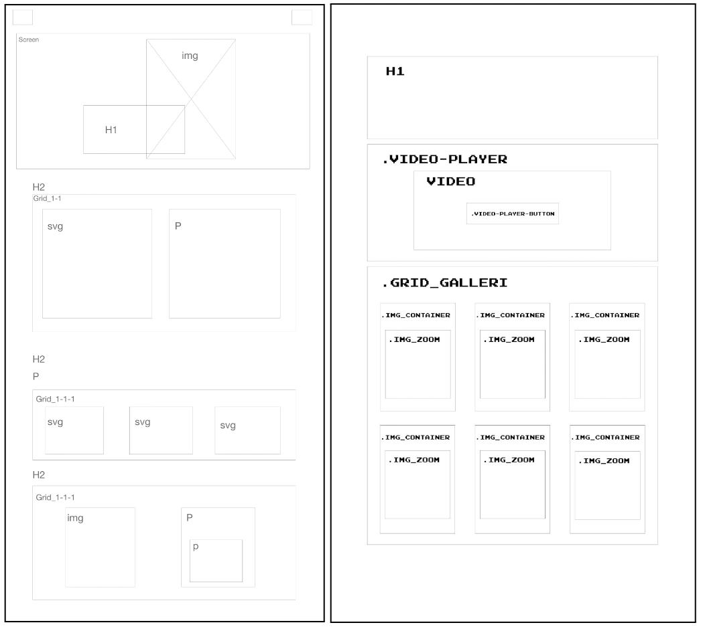

GRUNDLÆGGENDE INDHOLD
Pilotsite
I den givne opgave skulle vi hver især udforme et site som bygger omkring et videointerview vi foretog i grupper af to. Vi samarbejdede om at foretage interview samt producere b-rolls og billeder til senere brug. Efterfølgende skulle sammenfatte en video med en længde på max 1 minut ud fra det foretagne interview.
Her havde jeg særligt fokus på brugen af b-rolls, som jeg anvendte, for at lave ‘usynlige klip’, samt holde en lydbro for at understøtte continuity editing metoden jeg arbejdede ud fra. Den færdige video skulle efterfølgende præsenteres via et pilotsite, hvor billederne fra produktionsdagen bl.a. skulle indgå.

Redesign
Vi blev stillet for opgave i grupper at lave et redesign af en virksomheds website. Vi valgte at redesigne hjemmesiden for nintendopusheren.dk, hvor min opgave lød på at udforme ‘om os’ siden.
I gruppen samarbejdede vi om design for at skabe kontinuerlighed gennem hele sitet, dvs. at vi udarbejdede fælles moodboard og styletile samt samarbejdede om produktionen af indhold såsom videoer og billeder. Vi holdt et tæt samarbejde gennem hele projektet og gjorde hver især vores bedste for at overholde den gruppekontrakt vi udfyldte før påbegyndelse af projektet.
Produktionen af websitet foregik gennem github, hvilket havde fordele og ulemper. Vi valgte at placere vores video på ‘om os’ siden, hvor jeg fjernede controls i HTML, for i stedet at lave custom play/pause knapper i javascript med en togglePlay function samt en if-else regel og CSS. Da jeg havde udfordringer med github løb jeg dog tør for tid før jeg blev fuldkommen tilfreds, da jeg gerne ville have indsat flere controls end blot disse.